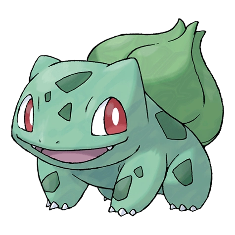
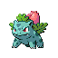

Бульбазавр

Бульбазавр — стартовый Покемон первого поколения под номером 1 в Покедекс. Обитает он в регионе Канто и относится к Травяному и Ядовитому типу. Бульбазавр эволюционирует в Ивизавра. Бульбазавра можно увидеть дремлющим при ярком солнечном свете. На его спине есть семя. Впитывая солнечные лучи, семя становится всё больше.
Тип и слабости:
Травяной
Ядовитый
Эволюция
# 001 Бульбазавр
=>

# 002 Ивизавр